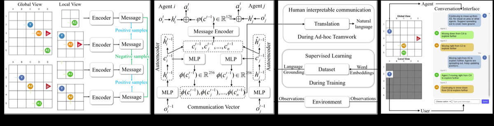

Why it matters왜 중요한가
For humans and agents to actually team up, the channel between them must be cheap to send and readable by a person — not one or the other.
사람과 에이전트가 진짜로 협업하려면, 둘 사이 통신 채널이 보내기 싸면서 동시에 사람이 읽을 수 있어야 한다 — 둘 중 하나가 아니라.
Efficiency-first methods (discrete autoencoders, VQ codes) produce opaque symbols nobody can decode. Interpretability-first methods ground messages in natural language but ride on continuous vectors that cost thousands of bits per step. GLC frames this as an Information Bottleneck problem and attacks all three corners at once: a discrete autoencoder for compression, LLM-grounded alignment for meaning, and contrastive learning so every agent speaks the same language. Crucially, LLM supervision is used only at training time — at deployment agents exchange tiny discrete symbols with no external model in the loop.
효율 우선 방식(이산 오토인코더, VQ 코드)은 아무도 못 읽는 불투명한 심볼을 만든다. 해석성 우선 방식은 메시지를 자연어에 정렬하지만 스텝당 수천 비트짜리 연속 벡터에 얹혀 있다. GLC는 이를 정보 병목(Information Bottleneck) 문제로 정식화하고 세 꼭짓점을 동시에 공략한다: 압축용 이산 오토인코더, 의미 부여를 위한 LLM 정렬, 그리고 모든 에이전트가 같은 언어를 쓰게 하는 대조 학습. 핵심은 LLM 감독을 학습 시점에만 쓴다는 점 — 배포 시엔 외부 모델 없이 작은 이산 심볼만 주고받는다.

By the numbers핵심 숫자
(vs 8192 for IC3Net/LangGround)전송 비트/스텝
(IC3Net/LangGround는 8192)
vs LangGround (ppv1)총 통신비용 절감
vs LangGround (ppv1)
language (ppv0)인간 언어와 코사인
유사도 (ppv0)
messages (ppv0)인간 메시지 대비
BLEU (ppv0)
(best of all baselines)위상 유사도
(모든 baseline 중 최고)
Predator-Prey + USAR벤치마크 · baseline 5종
Predator-Prey + USAR
Results — cheap to send, still readable결과 — 싸게 보내고도 읽힌다
| Method | Bits/step | Total bits (ppv1) | Ratio to GLC | Cos sim (ppv0) |
|---|---|---|---|---|
| GLC | 32.0 | 144.0 | 1.0× | 0.87 |
| LangGround | 8192.0 | 43417.6 | 301.5× | 0.82 |
| IC3Net | 8192.0 | 45056.0 | 312.9× | — |
| VQ-VIB | 58.0 | 417.6 | 2.9× | — |
| aeComm | 24.0 | 129.6 | 0.9× | — |
Note: aeComm sends slightly fewer bits, but its symbols have no language grounding — interpretability is near-random, so it is omitted from the cos-sim column. GLC is the only method that is both ultra-cheap and interpretable.
주의: aeComm은 비트를 약간 더 적게 보내지만 심볼에 언어 grounding이 없어 해석성이 거의 무작위 수준이라 코사인 열에서 제외됐다. GLC만이 초저비용이면서 동시에 해석 가능한 유일한 방식이다.
In one diagram한 장의 그림
The idea: one loss for three goals아이디어: 세 목표를 하나의 손실로
Discrete Autoencoder
A 3-layer MLP encoder→decoder with quantization (straight-through estimator) maps a 128-d observation feature into a tiny discrete symbol. A reconstruction loss L_recon regulates how much information the symbol may keep — this is the IB "complexity" knob, annealed up over training.
양자화(straight-through estimator)를 쓴 3층 MLP 인코더→디코더가 128차원 관측 특징을 작은 이산 심볼로 매핑한다. 복원 손실 L_recon이 심볼이 담는 정보량을 조절 — IB의 "복잡도" 손잡이로, 학습 중 점점 키운다.
LLM Grounding + Contrastive
An L_align cosine loss pulls each symbol's embedding toward the LLM-generated message for the same observation (LangGround-style), giving meaning. An L_contra supervised contrastive loss (window=5, ρ=0.1) makes agents seeing the same state emit consistent symbols — so the protocol is shared, not private.
L_align 코사인 손실이 각 심볼 임베딩을 같은 관측에 대한 LLM 생성 메시지 쪽으로 끌어당겨(LangGround식) 의미를 부여한다. L_contra 지도 대조 손실(window=5, ρ=0.1)은 같은 상태를 본 에이전트가 일관된 심볼을 내도록 만들어 — 프로토콜이 사적이 아닌 공유된 것이 되게 한다.
How it works어떻게 작동하나
- Collect expert language전문가 언어 수집LLM agents play the task in a textual interface and emit natural-language messages; their (observation, action)→message traces form an offline dataset D — no coordination hints are given in the prompt.LLM 에이전트가 텍스트 인터페이스에서 과제를 수행하며 자연어 메시지를 생성하고, 그 (관측, 행동)→메시지 궤적이 오프라인 데이터셋 D를 이룬다 — 프롬프트에 협응 힌트는 주지 않는다.
- Encode & compress인코딩·압축Each MARL agent encodes its observation into a 128-d feature, then a discrete autoencoder quantizes it into a 32-bit symbol broadcast to teammates.각 MARL 에이전트가 관측을 128차원 특징으로 인코딩한 뒤, 이산 오토인코더가 32비트 심볼로 양자화해 동료에게 브로드캐스트한다.
- Ground + aligngrounding + 정렬When D has a matching state, an alignment loss pulls the symbol's 256-d embedding toward the LLM message; a contrastive loss keeps all agents' symbols for that state consistent.D에 일치하는 상태가 있으면 정렬 손실이 심볼의 256차원 임베딩을 LLM 메시지 쪽으로 끌고, 대조 손실이 그 상태에 대한 모든 에이전트 심볼을 일관되게 유지한다.
- Balance via IB annealingIB 어닐링으로 균형L = L_policy + λ_A·L_align + λ_R·L_recon + λ_C·L_contra, with λ_R annealed up ("explore then compress") and λ_A/λ_C preset per task (higher alignment for complex USAR).L = L_policy + λ_A·L_align + λ_R·L_recon + λ_C·L_contra, λ_R는 점증("탐색 후 압축"), λ_A/λ_C는 과제별 사전설정(복잡한 USAR엔 정렬 가중치↑).
What to take away그래서, 가져갈 것
~300× cheaper, no accuracy tax. 32 bits/step vs 8192 for continuous baselines, while matching or beating them on task reward and finishing in ~4.5 steps (vs 5.3–7.2).
약 300배 저렴, 정확도 손해 없음. 연속 baseline의 8192 대비 32비트/스텝으로, 보상은 동등·상회하고 약 4.5스텝(5.3~7.2 대비)에 완료.
Discrete and interpretable. The standing wisdom was "discrete = opaque." Grounding tiny symbols in LLM language breaks that: cos-sim 0.87, BLEU 0.65, topographic similarity 0.73.
이산이면서 해석 가능. "이산 = 불투명"이 통념이었다. 작은 심볼을 LLM 언어에 grounding하면 그 통념이 깨진다: 코사인 0.87, BLEU 0.65, 위상 유사도 0.73.
LLM only at train time. Decoupling supervision from deployment means inference stays cheap and LLM-free — practical for bandwidth-limited swarms.
LLM은 학습 때만. 감독과 배포를 분리해 추론은 저렴하고 LLM-free — 대역폭 제한 군집에 실용적.
Each loss earns its place. Ablations: removing LLM grounding crashes cos-sim 0.87→0.06; removing the autoencoder hurts efficiency; removing contrastive hurts consistency.
각 손실이 제 역할. 어블레이션: LLM grounding 제거 시 코사인 0.87→0.06 붕괴, 오토인코더 제거 시 효율 저하, 대조 제거 시 일관성 저하.